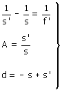
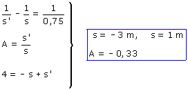

b) Utilizamos el mismo sistema del apartado anterior pero conociendo f' = 0,75 m  Sin que sirva de precedente trabajaremos con valores numéricos (Recordando que operamos en m)  La lente deberá estar a 1 m de la pantalla y a 3 m del objeto. El aumento es -0,33 |